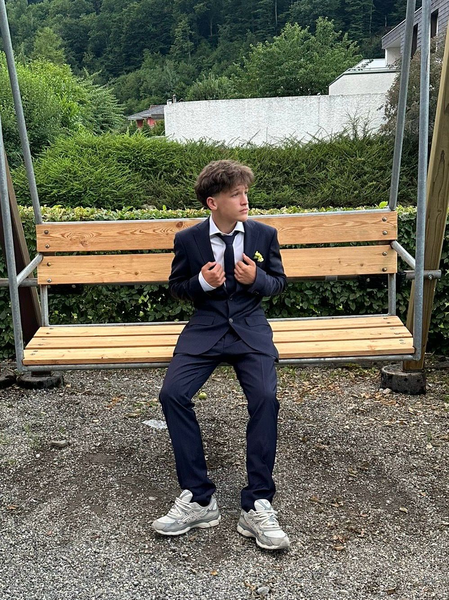
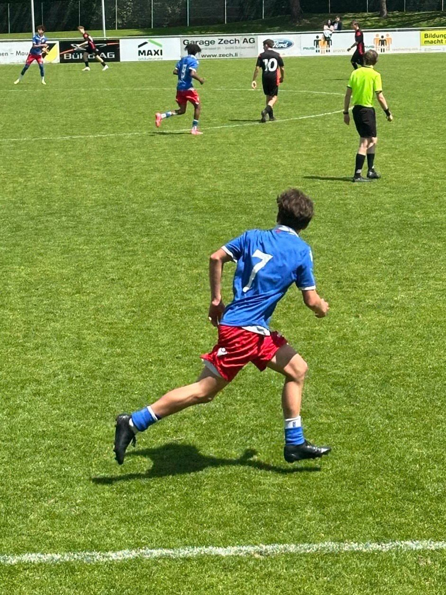
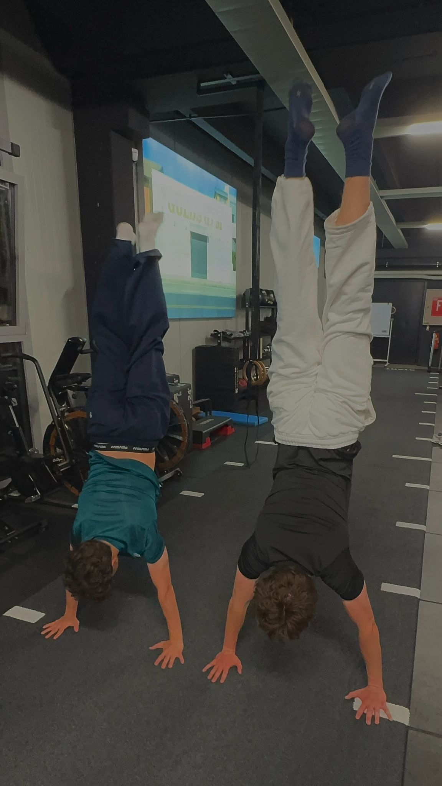
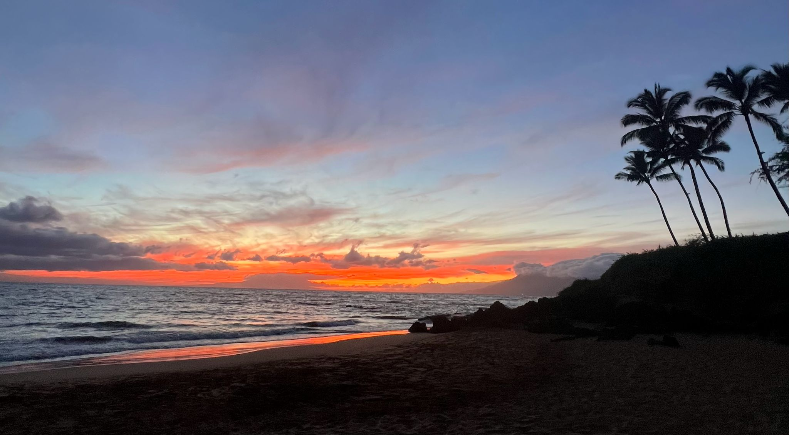

Hallo, ich bin Sergiu.
Ich mache die duale Ausbildung zum Informatiker EFZ in Applikationsentwicklung und besuche parallel dazu die Berufsmaturität. Ich bin neugierig und bleibe an einer Sache dran, bis sie läuft. Im Team bringe ich gerne eigene Ideen ein und schaue mir ab, wie andere ein Problem lösen.
Am Programmieren gefällt mir, dass aus einer Idee etwas wird, das du starten und benutzen kannst. Ich suche gerne nach einem Fehler, bis ich verstehe, woher er kommt.
Hobbys


Reisen
Ich reise gerne und schaue mir an, wie die Leute in anderen Ländern leben.

- Barcelona: Die Sagrada Família, das Camp Nou und der FC Barça.
- Nächstes Ziel: eine Safari in Afrika, um Löwen, Elefanten und Giraffen in freier Wildbahn zu sehen.
Lebenslauf
Mein Lebenslauf
PDF öffnen